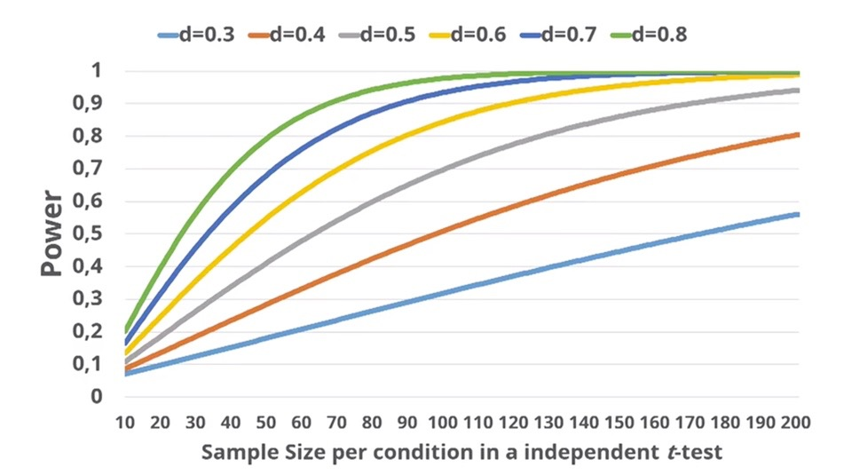

7 Расчет размера выборки
После того, как мы выбрали уровень значимости, уроовень статистической мощности и статистический критерий, который мы будем использовать для проверки гипотезы, нам нужно рассчитать, сколько наблюдений нужно набрать, чтобы сделать точный вывод с учетом всех выбранных нами допущений и вероятностей относительно ложнооположительного и ложноотрицательного вывода?
Этот пункт раньше часто пропускался: казалось, что размер выборки не требует определенного расчета, и достаточно опираться на предыдущие исследование. Оказалось, что это не так, подробнее о последствиях такого подхода в следующем подразделе Questionable and good research practices.
Размер выборки неразрывно связан с тремя другими параметрами: статистической мощностью (чаще всего выбираем на уроовне 80%), уровня значимости и размера эффекта. Он рассчитывается на основании статистической мощности, уровня значимости и ожидаемого размера эффекта выбранного статистического критерия
Размер эффекта – это величина наблюдаемых различий. За степень различий отвечает не полученная статистика после примененного статистического критерия (например, t-значение, F-значение), и не p-значение, а отдельная метрика. Эта метрика расчитывается по формулам индивидуально для каждого статистического теста. Например, для t-testа размер эффекта – это Cohen’s d. В психологических исследованиях размер эффекта редко бывает большим. И чем меньше ожидаемый размер эффекта, тем больше наблюдений нам надо собрать для возможности сделать точный вывод о наличи или отсутствии различий в генеральной совокупности.

Зная статистическую мощность, уровень значимости и размер эффекта – размер выборки можно рассчитать в Gpower https://www.psychologie.hhu.de/arbeitsgruppen/allgemeine-psychologie-und-arbeitspsychologie/gpower или в R, например, с помощью пакета pwr https://cran.r-project.org/web/packages/pwr/pwr.pdf
Для того, чтобы детально поразбираться в нюансах размера эффекта и выборки, можно пройти курс Лакенса https://www.coursera.org/learn/statistical-inferences (кажется, только с vpn)